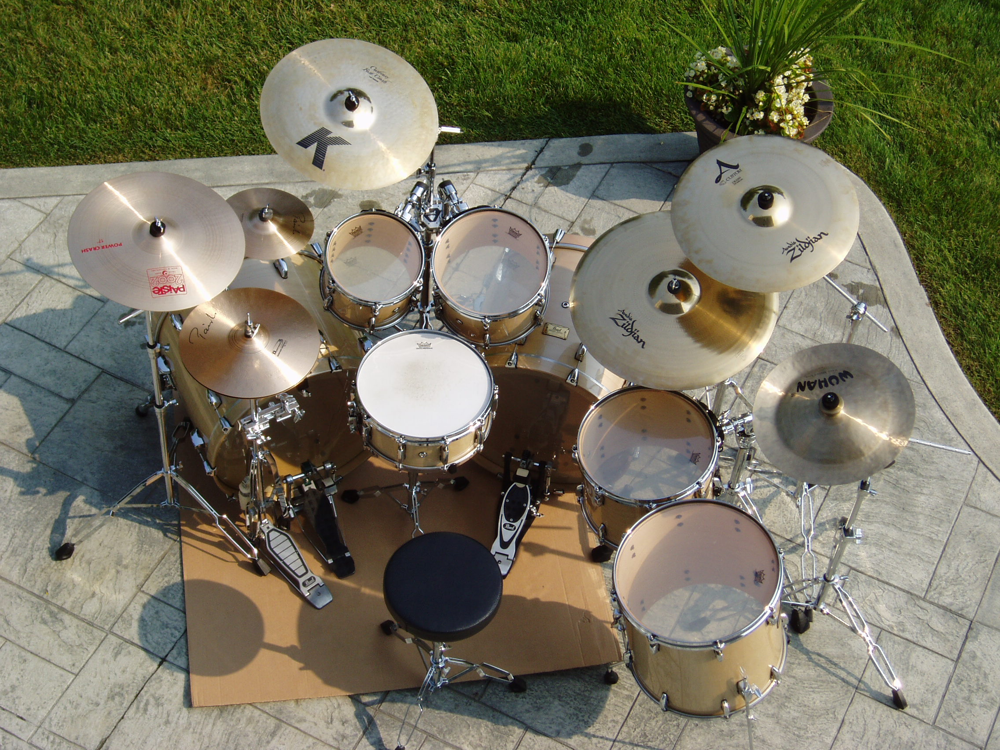

Taste The Music
No.Boundary.For.Your.Soul
Drum Terminology
"Music is a world within itself, with a language we all understand." ~ Stevie Wonder So to help you get started with this new language, here is a list of essential drums vocabulary.
DRUMS
- The bass drum is the large drum at the bottom of the drum kit and has a low pitch. It is played with a pedal.
- The snare drum goes between the drummers legs and is most commonly 14 inches in diameter. Wires on the bottom drum head produce a "buzzing" sound when the drum is played.
- The high tom is placed above and in front of the snare drum and usually mounted on the bass drum. It is the highest-pitched of the tom toms and makes a round open, resonant sound.
- Like the high tom, the mid tom is usually mounted on the bass drum. It is placed next to the high tom and has a similar sound but is tuned to a lower pitch.
- The low tom (floor tom) is the lowest-pitched of the tom toms. It is usually deeper than the high and mid toms and most commonly features legs; therefore, it doesn't need to be mounted to a stand or another drum. A low tom with legs is called a floor tom.
CYMBALS
- The hi hat cymbals are a pair of medium-sized cymbals that are held together on a hi hat stand. By releasing the foot pedal on the hi hat stand, the cymbals separate and produce a sustained sloshy sound. The hi hats are placed next to the snare drum and the pedal is played with the weak foot.
- The ride cymbal is a large cymbal that is usually placed next to the floor tom at the right-hand side of the kit (for right-handed players). It is most commonly played with the tip of the stick on the surface of the cymbal to produce a "ding" sound.
- The crash cymbal varies from 14 to 20 inches in diameter. It is struck with the neck of the stick on the edge of the cymbal to produce a loud, fast "crash." Crash cymbals are usually thinner than ride cymbals, as they are designed to have a quick response after being hit.
- The splash cymbal is a small cymbal (6"-12" in diameter) that is played in a similar way to a crash. It has a very fast response and a fast decay.
- The China cymbal is an effects cymbal which produces a harsh trashy sound. It is unusual in that it bends one way, and then the other
HARDWARE
- Floor tom legs elevate the floor tom.
- The bass drum pedal is used to strike the bass drum.
- A snare stand is a stand for the snare drum.
- The tom arm is usually placed in a hole in the bass drum. These tom stands are designed to mount the tom toms but allow them to resonate freely.
- A hi hat stand features a pedal which is used to bring the hi hat cymbals closer together to produce a tight sound, or further apart to produce a sloshy sound.
- A cymbal stand is designed to hold a cymbal.
MAINTENANCE
- A drum key is for tuning drums.
- Rings of felt are placed on cymbal stands to protect cymbals from damage.
- Sleeves are plastic tubings placed on the cymbal stand to protect cymbals from damage.
- The wing nuts are used to seal cymbals onto their stands.
DRUM HEADS
- The drum head, otherwise known as “drum skin,” is a thin sheet of plastic film that covers the drum and is struck to produce the sound we hear.
- Clear drum heads are transparent and have a resonant tone.
- Coated drum heads have a white frosted coating, which gives them a dryer, warmer tone.
- Calf skin heads are designed to look and feel like real calfskin heads.
- The batter head refers to the drum head on the side of the drum which is struck.
- The resonant head refers to the side of the drum which isn't struck.
- Single ply heads feature one thin ply of film. They are less durable but have a brighter sound.
- Double ply heads feature two plies of plastic film and produce a darker, more dampened sound.
- The snare head is the drumhead placed on the bottom of the snare. It is an extremely thin head designed to get optimum response from the snares.
DRUM ANATOMY
- The drum shell is the main body of the drum and is usually made of wood.
- The drum shell is the main body of the drum and is usually made of wood.
- Lugs are small inserts on the outside of the shell into which tension rods are screwed.
- The tension rods are placed through holes in the hoop and are screwed into the lugs to create the desired drum head tension.
- Snares are coiled wires on the bottom of a snare drum, which rest on the snare head. When the drum is hit, the snares rattle producing a "buzzing" sound.
- The throw off or throw is used to release the snares from the snare head and transform the snare drum into a regular drum.
RHYTHM
- The backbeats are beats 2 and 4 of each bar. Most pop and rock music features a heavy accent on the backbeats, giving the music its momentum.
- Down beats are notes played on the pulse.
- Up beats are notes played against the pulse.
- Time signature tells us the number of beats in each bar and the type of beats they are. 4/4 tells us that there are 4 quarter beats in each bar.
- Bars are how music is measured. Breaking music down into bars allows players and listeners to more easily navigate.
- The beat is another measurement of music. If bars are equivalent to a pound when referring to weight, then beats can be compared to ounces. A bar is made up of a certain number of beats, and a beat can be subdivided further.
- A quarter note (crotchet) represents a quarter of a whole note. Most music has a quarter note pulse, so these notes are often defined as one beat in length.
- The duration of an eighth note (quaver) is an eighth of a whole note. In most pop and rock music, an eighth note is half a beat in length (the beats are usually quarter notes in length).
- A sixteenth note (semiquaver) has the value of a sixteenth of a whole note.
- A half note (minim) has the value of half a whole note or 2 quarter note beats.
- A whole note has the value of 4 quarter note beats.
ABOUT LIBERTY PARK MUSIC
LPM is an online music school. We teach a variety of instruments and styles, including classical and jazz guitar, piano, drums, and music theory. We offer high-quality music lessons designed by accredited teachers from around the world. Our growing database of over 350 lessons come with many features—self-assessments, live chats, quizzes etc. Learn music with LPM, anytime, anywhere!